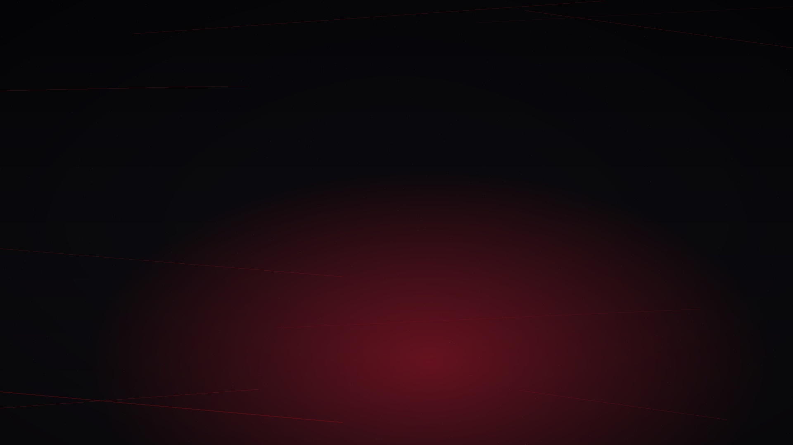

S01 · Incorporación
Por qué entré a BNI
Qué pasó antes, qué cambió después y qué descubrió el miembro.

No se entrevistan empresas. Se entrevistan personas: historias reales, errores, aprendizajes, referencias y conexiones humanas.
Cada temporada resuelve una necesidad: incorporación, referencia, aprendizaje, sectores, One-to-One y visitantes.
Qué pasó antes, qué cambió después y qué descubrió el miembro.
Origen de una colaboración real, pasos y aprendizaje replicable.
Errores, frenos, malas prácticas y cambios que producen resultados.
Miembros del mismo sector analizan tendencias y oportunidades.
Conversaciones individuales que terminan en confianza y negocio.
Historias de integración y acompañamiento hasta que alguien se queda.
Grabación sencilla, estética cuidada y distribución pensada para Telegram, clips verticales y piezas reutilizables.
Tres preguntas, una historia central y una conclusión práctica.
Móvil o micrófono sencillo. Lo importante es claridad, cercanía y ritmo.
60-90 segundos subtitulados para consumo rápido dentro del canal.
Titular, aprendizaje principal y llamada a que los miembros comenten o conecten.
Cada página conecta con el siguiente bloque estratégico para que la navegación sea circular, clara y orientada a acción.
Sirve para escuchar a personas reales, no para publicar entrevistas corporativas sin vida.